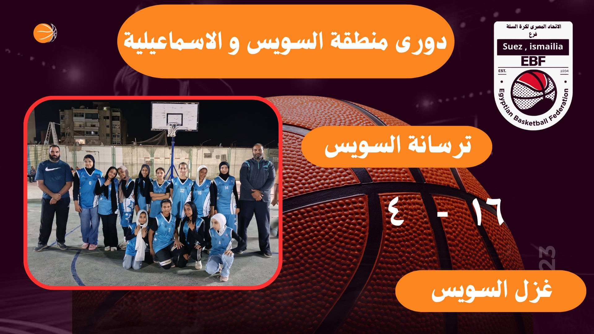
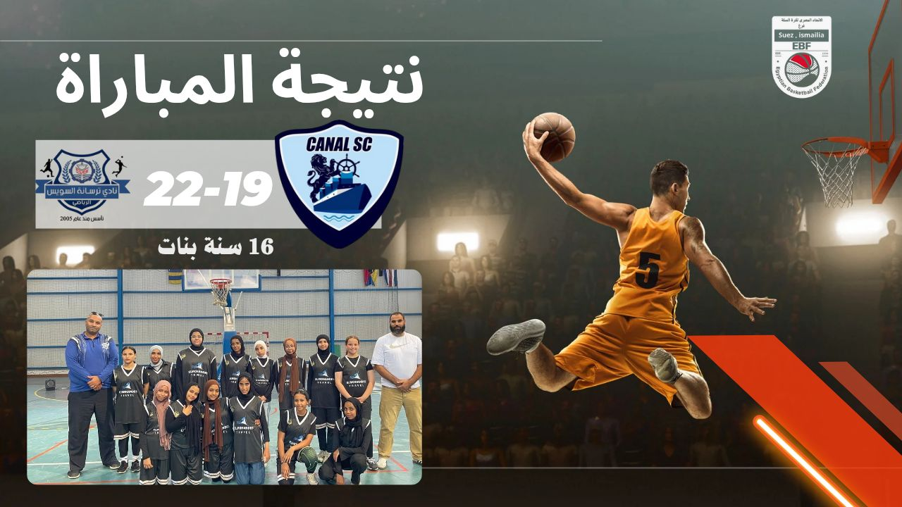
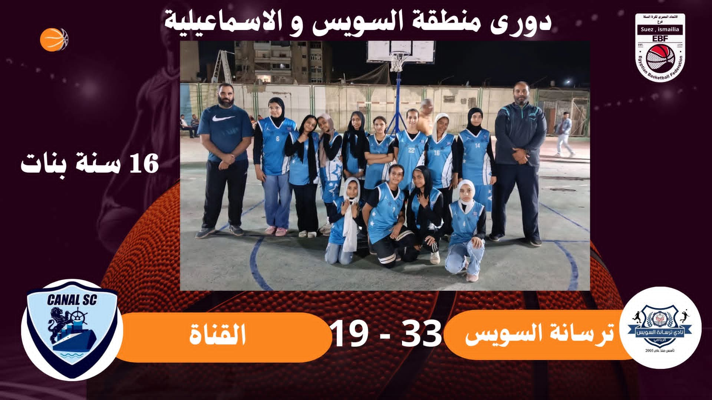
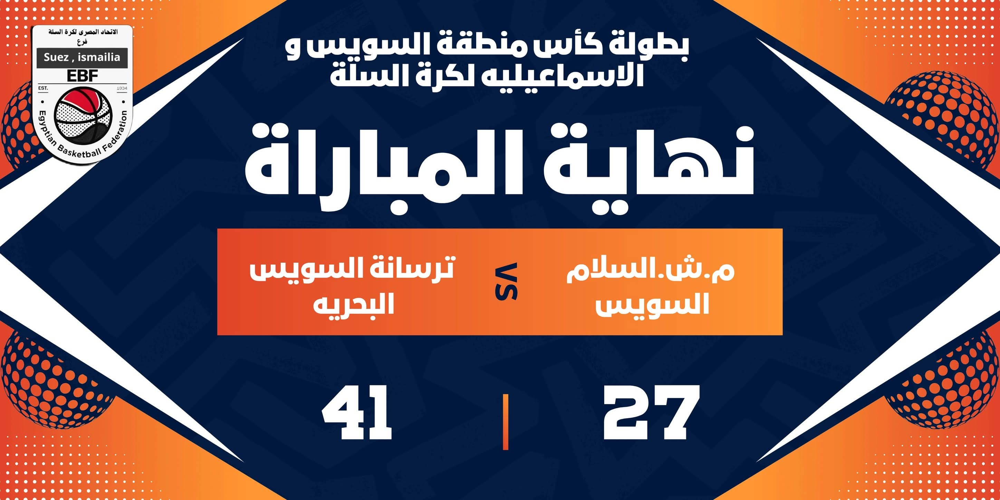
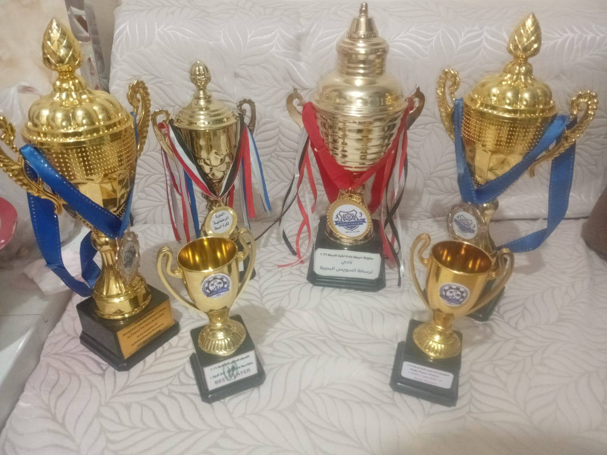

فريق 14 سنة اولاد
فريق تحت 14 سنة اولاد يوجد به نخبة من اللاعبين الواعدين ابرزهم عمر معاطى ومصطفى رامى ومحمد محمود
بيانات الفريقتأسس منذ عام 2022

نادى ترسانة السويس البحرية بالسويس هو نادى تابع لشركة ترسانة السويس البحرية ببورتوفيق والتى تتبع لهيئة قناة السويس والتى تعد من الشركات القومية العريقة والهامة جدا بالدولة لانها تدير المجرى الملاحى لقناة السويس وتقوم بمعظم اعمال الصيانة الخاصة به
وقد تأسس النادى عام 2005 ليقوم بخدمة العاملين بالشركة فى كافة الانشطة الرياضية منها كرة القدم وكرة السلة والكرة الطائرة وغيرها من الرياضات وفيما يخص كرة السلة فقد أسس الكابتن / سمير عبد المنعم اكاديمية كرة السلة بالنادى لتخريج براعم من الاولاد والبنات يكونوا لاعبين كبار فى المستقبل وتم تسجيل فرق للنادى بالفعل فى الاتحاد المصرى لكرة السلة وهى فرق 14 سنة اولاد و14 سنة بنات وفريق 16 سنة اولاد و 16 سنة بنات و فريق 20 سنة شباب وجارى العمل على توسيع النطاق اكثر من ذلك فى المستقبل والمشاركة فى الدورى بعدد فرق اكثر ان شاء الله ومن اهم اهداف النادى الان تكوين فريق درجة اولى محترم ينافس فى البطولات المحلية ويكون ممثلا لمحافظة السويس حتى تعود المحافظة الى سابق عهدها بكرة السلة وسط الكبار

فريق تحت 14 سنة اولاد يوجد به نخبة من اللاعبين الواعدين ابرزهم عمر معاطى ومصطفى رامى ومحمد محمود
بيانات الفريق
انتصار فريق الترسانة انسات تحت 16 سنة على فريق انسات نادى غزل السويس فى ماتش الذهاب بنتيجة مستحقة وذلك فى ايطار مباريات دورى منطقة السويس والاسماعيلية لكرة السلة عن موسم 2024-2025 بنتيجة 16-4

انتصار فريق الترسانة انسات تحت 16 سنة على فريق انسات نادى قناة السويس بالاسماعيلية فى ماتش الذهاب وهو على ملعب الخصم والذى كان ندا لنا طوال المباراة واستطاعت لاعباتنا الفوز فى نهاية المبارة وذلك فى ايطار مباريات دورى منطقة السويس والاسماعيلية لكرة السلة عن موسم 2024-2025 بنتيجة 22-19

انتصار فريق الترسانة انسات تحت 16 سنة على فريق انسات نادى قناة السويس بالاسماعيلية فى ماتش العودة على ملعبنا بنتيجة مستحقة بعد مجهود كبير من لاعباتنا الواعدات وذلك فى ايطار مباريات دورى منطقة السويس والاسماعيلية لكرة السلة عن موسم 2024-2025 بنتيجة 33-19

حصول فريق الترسانة انسات تحت 16 سنة على المركز الثالث فى ترتيب دورى منطقة السويس والاسماعيلية لكرة السلة عن عام 2024-2025 والذى يشارك به الفريق للمرة الاولى وهو انجاز يحتسب للجهاز الفنى ولللاعبات وان شاء الله يحصل الفريق على المركز الاول فى المواسم القادمة بأذن الله

انتصار فريق الترسانة شباب تحت 20 سنة على فريق شباب مركز شباب السلام بالسويس وذلك فى ايطار مباريات بطولة كأس منطقة السويس والاسماعيلية لكرة السلة عن موسم 2024-2025 بنتيجة 41-27

انتصار فريق الترسانة شباب تحت 16 سنة على فريق شباب نادى غزل السويس والذى كان ندا لنا طوال المباراة واستطاع لاعبينا الفوز فى نهاية المبارة بعد مباراة مرثونية وذلك فى ايطار مباريات بطولة كأس السويس والاسماعيلية لكرة السلة عن موسم 2024-2025 بنتيجة 24-20

انتصار فريق الترسانة انسات تحت 16 سنة على فريق انسات مركز شباب السلام بالسويس وذلك فى ايطار مباريات بطولة كأس منطقة السويس والاسماعيلية لكرة السلة عن موسم 2024-2025 بنتيجة 12-9

انتصار فريق الترسانة انسات تحت 16 سنة على فريق انسات نادى غزل السويس وذلك فى ايطار مباريات بطولة كأس منطقة السويس والاسماعيلية لكرة السلة عن موسم 2024-2025 بنتيجة 29-21

حصول فرق نادى ترسانة السويس البحرية لكرة السلة فى جميع المراحل العمرية على المركز الاول وذلك فى ايطار مباريات بطولة حريفة بلدنا لكرة السلة عن موسم 2024-2025 والتى تقام فى شهر رمضان المبارك من كل عام